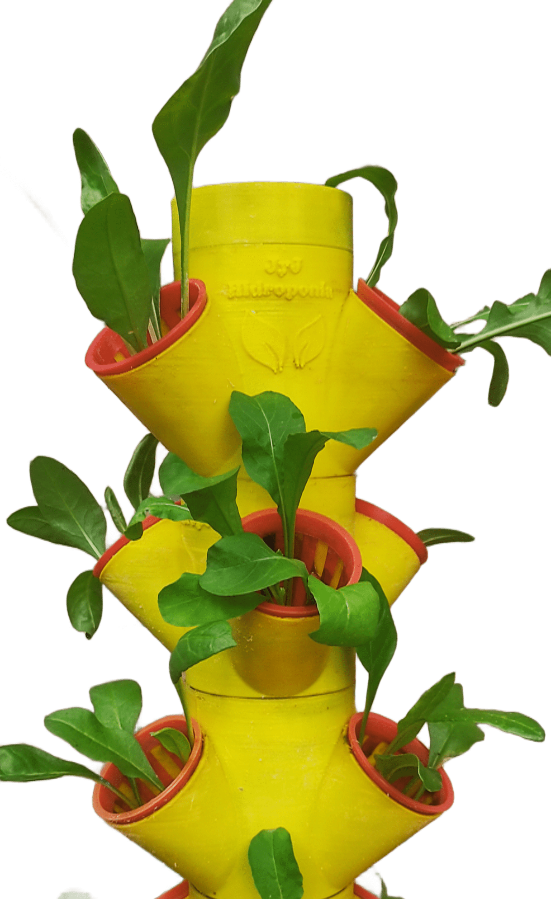

Cultivo Ecológico en tu Hogar
En JyJ Hidroponía creemos que cultivar tus propios alimentos frescos en casa no solo es posible, sino también fácil, limpio y gratificante. Ofrecemos soluciones innovadoras para quienes buscan una vida más saludable, sostenible y conectada con lo natural, combinando tecnología y diseño. Nuestras torres hidropónicas verticales permiten cultivar plantas sin tierra, transformando cualquier rincón en un huerto productivo. Fabricadas mediante impresión 3D, cuentan con un sistema modular que optimiza la circulación del aire y la exposición a la luz, favoreciendo cultivos más sanos y cosechas rápidas. No se requiere experiencia previa: solo agua y nutrientes para comenzar a disfrutar. Cada producto refleja nuestro compromiso con la calidad, la innovación y el desarrollo local, acompañado de asesoramiento personalizado. Cultivar en casa con JyJ Hidroponía es reconectar con lo esencial, reducir el desperdicio y ganar independencia alimentaria desde la comodidad del hogar. Hacemos envíos a todo el país y te acompañamos en todo el proceso. Convertí tu espacio en vida. Empezá hoy.
Descubre las ventajas de adoptar un sistema hidropónico en tu hogar:
🌱 Ahorro de AguaUtiliza hasta un 90% menos de agua que los métodos tradicionales, ideal para una agricultura sostenible. |
🏡 Cultivo en Espacios ReducidosOptimiza cualquier rincón de tu hogar, desde balcones hasta interiores, con estructuras 3D compactas. |
🔍 Control Total del EntornoRegula luz, temperatura y nutrientes para un crecimiento perfecto todo el año. |
🚫 Sin PesticidasEvita el uso de químicos y mantén tus plantas libres de plagas. |
🍅 Alimentos Frescos Todo el AñoCosecha productos orgánicos y frescos, sin depender de las estaciones. |
🚀 Crecimiento y Rendimiento RápidoObtén cosechas rápidas y abundantes con tecnología avanzada y piezas 3D diseñadas para potenciar el crecimiento. |
Nuestros Productos

Sistema Vertical Automático JyJ Modular
Este sistema modular está diseñado para asegurar una circulación óptima de la solución nutritiva, maximizando el espacio y el rendimiento. Los módulos son fáciles de ensamblar y limpiar, ideal para espacios pequeños y cultivos escalables.
Sobre Nosotros: Innovación y Sustentabilidad en Hidroponía
JyJ Hidroponía es una empresa argentina, especializada en sistemas hidropónicos personalizados para el hogar. Diseñamos y fabricamos nuestros productos profesionalmente utilizando tecnología de impresión 3D. Con una sólida formación en ciencias agrarias y años de experiencia en investigación y desarrollo, transformamos la agricultura tradicional con soluciones hidropónicas eficientes, ecológicas y sostenibles, promoviendo un modelo de cultivo más responsable con el medio ambiente.
Nuestra Misión: Cultivo Hidropónico al Alcance de Todos
"Facilitar el acceso a sistemas de cultivo hidropónico accesibles, sostenibles y de bajo impacto ambiental. En JyJ Hidroponía, nos enorgullecemos de ofrecer soluciones innovadoras con sistemas diseñados y fabricados en 3D, permitiendo que cada hogar tenga acceso a tecnología avanzada para cultivar sus propios alimentos frescos."
Visión: Ser Líderes en Hidroponía para Hogares Sustentables
"Posicionarnos como la empresa líder en hidroponía doméstica, reconocida por nuestra constante innovación y compromiso con la sostenibilidad. Aspiramos a transformar la forma en que las personas cultivan sus alimentos, ofreciendo sistemas fabricados en 3D."
¿Por qué Elegirnos?
Experiencia Comprobada
Contamos con años de experiencia en hidroponía, brindando asesoramiento y productos de alta calidad a nuestros clientes.
Productos de Calidad
Nuestros sistemas hidropónicos y soluciones nutritivas están diseñados con los mejores materiales para asegurar durabilidad y eficiencia.
Soporte Especializado
Te acompañamos en cada paso del proceso, desde la elección del sistema hasta el cuidado de tus plantas, garantizando el éxito de tu cultivo.
Innovación Constante
Nos enfocamos en el desarrollo de nuevas técnicas y diseños para ofrecerte soluciones innovadoras y adaptadas a tus necesidades.
Pagos en Cuotas
Ofrecemos opciones de pago en cuotas con todas las tarjetas, para que puedas acceder a nuestros productos sin preocupaciones.
Envíos a Todo el País
Realizamos envíos a donde usted lo requiera, asegurando que puedas recibir nuestros productos en cualquier lugar.
Preguntas Frecuentes
¿Qué es la hidroponía y cómo funciona?
La hidroponía es un método de cultivo de plantas sin necesidad de suelo, donde las raíces se sumergen en una solución nutritiva. Funciona mediante la entrega directa de nutrientes esenciales a las plantas, lo que les permite crecer de manera más eficiente y saludable.
¿Cuáles son las ventajas de la hidroponía en comparación con la agricultura tradicional?
La hidroponía ofrece varias ventajas, como un mayor control sobre el entorno de crecimiento de las plantas, un uso más eficiente del agua y los nutrientes, un crecimiento más rápido de las plantas y la posibilidad de cultivar en espacios reducidos o interiores.
¿Qué tipo de plantas puedo cultivar usando hidroponía?
Prácticamente cualquier planta puede cultivarse mediante hidroponía, incluyendo hierbas, vegetales de hoja verde, tomates, fresas y flores ornamentales. Sin embargo, algunas plantas pueden requerir sistemas hidropónicos específicos para su cultivo.
¿Es difícil mantener un sistema hidropónico en casa?
No necesariamente. Con la orientación adecuada y el equipo adecuado, mantener un sistema hidropónico en casa puede ser bastante sencillo. Muchos sistemas están diseñados para ser fáciles de usar y requieren un mantenimiento mínimo una vez establecidos.
¿Qué tipo de asesoramiento ofrecen?
Ofrecemos asesoramiento personalizado sobre cómo configurar y mantener un sistema hidropónico en casa, qué plantas cultivar, cómo controlar plagas y enfermedades, y cómo optimizar el rendimiento de tus cultivos.
Si tienes alguna consulta o quieres más información, ¡no dudes en contactarnos! Estamos aquí para ayudarte.
Posadas, Misiones, Argentina. C.P. 3300.
info@grupomisiones.com.ar
Venta Mayorista de Torres Hidropónicas
Producto de fabricación propia, ideal para reventa y proyectos comerciales
Comercializamos nuestras torres hidropónicas impresas en 3D bajo modalidad de venta directa para negocios y emprendedores que buscan un producto innovador y de alto valor agregado.
- Viveros y tiendas de jardinería
- Growshops
- Ferreterías y bazares
- Emprendedores del rubro verde
- Distribuidores regionales
- Nombre o empresa
- Localidad
- Cantidad